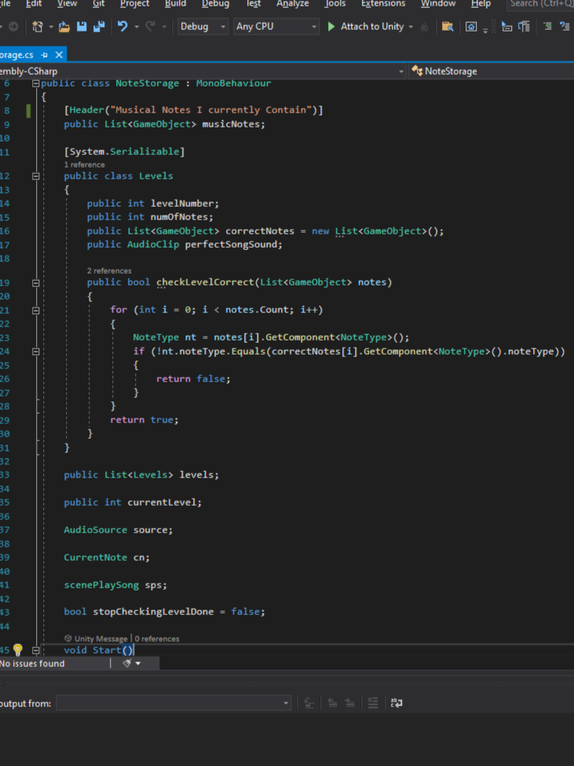

Wings of Harmony
2D Musical GameCreated in Unity using C#
Below are some screenshots of the game and code to go along with it. The GDD is also included, which I also contributed to.
Gameplay Screenshots

Title Screen

Gameplay

Successfully completing a level
Code & Features

Level Manager

Note Movement

Dynamic Level Creator